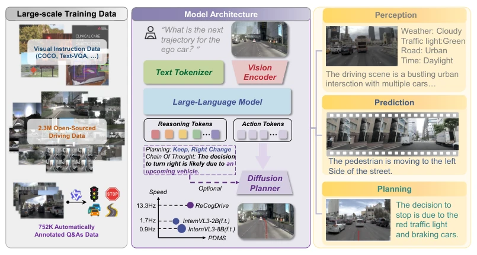
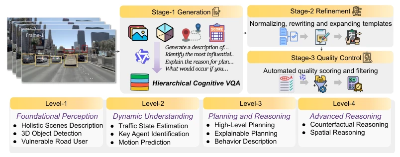
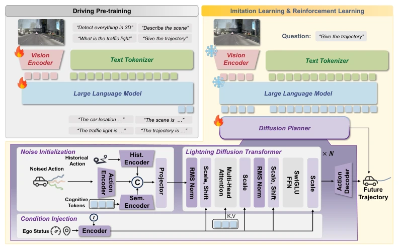
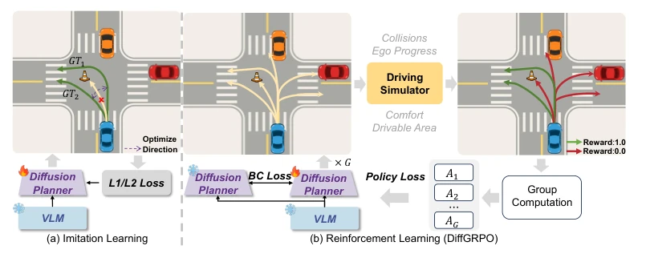
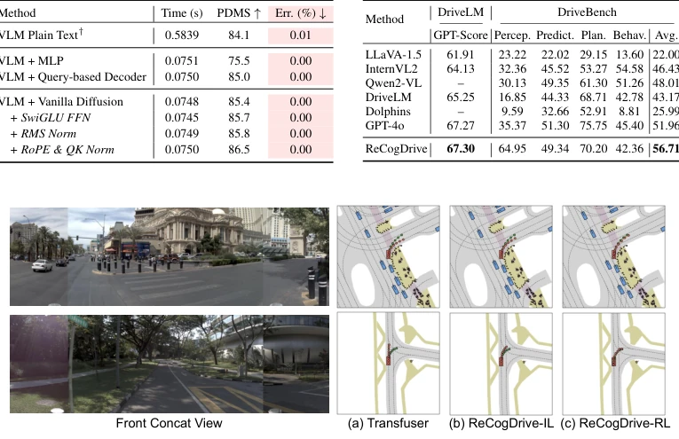
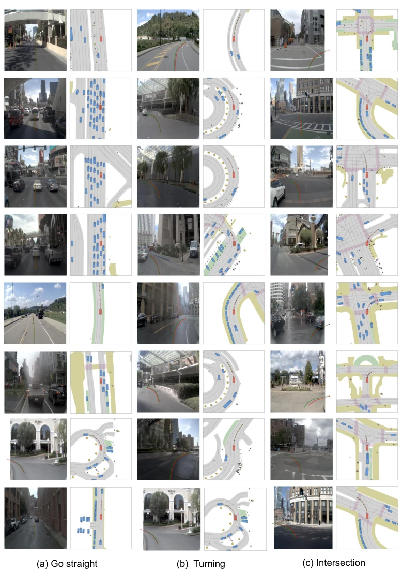
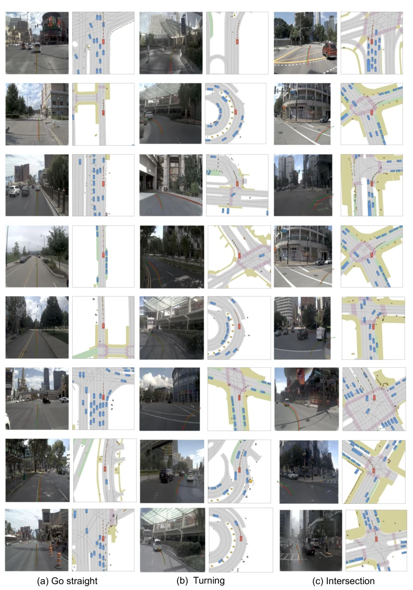
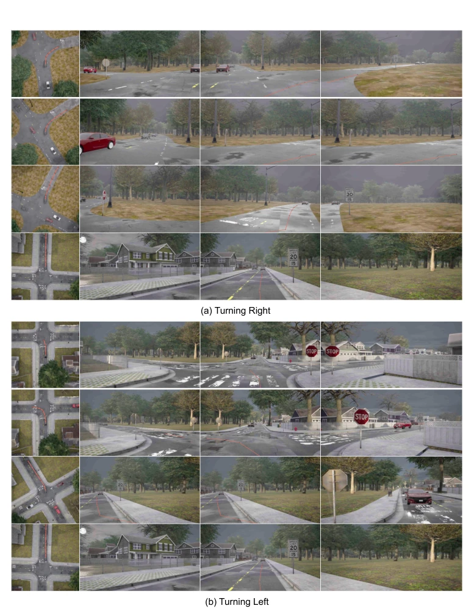
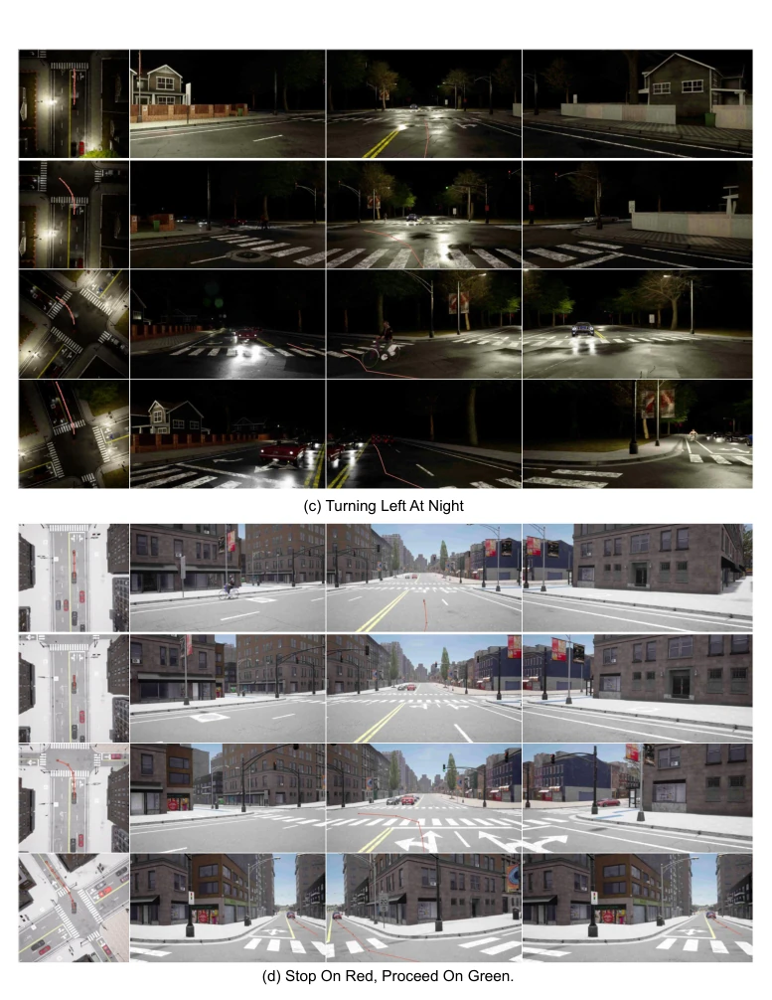
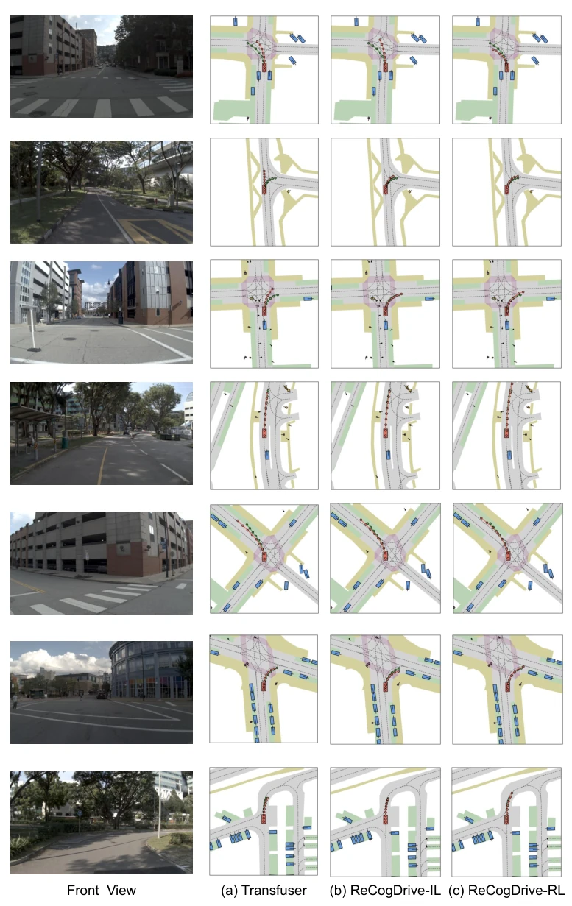

This ReCogDrive attempts to equip autonomous driving with a "brain" and a "cerebellum". VLM is responsible for thinking, diffusion models are responsible for moving legs. Previous VLM-driven methods (e.g., Hwang et al., 2024) directly generate trajectories as text, resulting in "text not matching the topic", format disorder and slowness, even output errors causing parsing failures. ReCogDrive implements a hierarchical data pipeline to inject driving cognition, then uses DiffGRPO reinforcement learning to optimize safety. Although it sounds substantial, whether relying on simulator reward functions is truly reliable remains a question mark, after all there is always a gap between simulation and reality. However, PDMS setting a new high is indeed impressive, 7.8x acceleration is also stronger than pure text generation, counting as finding a reliable posture for VLA models in the autonomous driving field, at least more like a car than pure text generation.
研究动机Motivation
端到端自动驾驶常遇长尾问题，现有系统泛化差。引入 VLM 虽能利用世界知识，但现有方法（如 Hwang et al., 2024; Jiang et al., 2024a）将规划重构为语言建模，离散文本空间与连续动作空间不匹配，导致不可行动作或解析错误。此外，预训练 VLM 缺乏驾驶细微知识，导致领域差距。依赖行为克隆（Behavior Cloning）的模型（Chu et al., 2025）在罕见场景下易收敛到次优策略，无法处理复杂决策。因此，需要结合 VLM 的推理能力和扩散模型的生成稳定性，解决模态不匹配和策略优化问题，实现更安全、连续的轨迹生成，避免“文不对题”的尴尬。
End-to-end autonomous driving often encounters long-tail problems, existing systems have poor generalization. Introducing VLM can utilize world knowledge, but existing methods (e.g., Hwang et al., 2024; Jiang et al., 2024a) reconstruct planning as language modeling, discrete text space and continuous action space mismatch, leading to unactionable actions or parsing errors. Additionally, pre-trained VLM lacks driving nuanced knowledge, leading to domain gap. Models relying on Behavior Cloning (Chu et al., 2025) easily converge to suboptimal policies in rare scenes, unable to handle complex decisions. Therefore, it is necessary to combine VLM's reasoning ability and diffusion model's generation stability, solve modality mismatch and policy optimization problems, achieve safer, continuous trajectory generation, avoid the awkwardness of "text not matching the topic".
The framework is divided into three steps. 1. Hierarchical data pipeline: Through generation, refinement, QA three stages, simulate human cognition (perception->understanding->planning->reasoning), build VQA dataset, adapt general VLM to driving cognition model, inject human driving priors. 2. Cognition-guided diffusion planner: VLM hidden states as conditions injected into diffusion denoising process, solve modality mismatch, generate continuous stable trajectories, avoid text generation jitter. Adopt DiT architecture, integrate SwiGLU FFN, RoPE and RMS Norm, enhance non-linear expression and position encoding. 3. DiffGRPO: Based on diffusion group relative policy optimization, treat diffusion policy as internal MDP, evaluate collisions, comfort, etc. in NAVSIM simulator, calculate advantage update policy, surpass pure imitation. Training flow includes pre-training, imitation learning and reinforcement learning three stages, ensure model both knows driving and can execute safely, use PDMS as reward signal, prevent policy collapse.

Figure 1: Overview of ReCogDrive. We present ReCogDrive, an end-to-end autonomous driving system, which possesses rich driving priors and generates continuous, stable trajectories via a diffusion denoising process. ReCogDrive is capable of performing tasks spanning from low-level scene perception and motion prediction to high-level driving planning and decision making.

Figure 2: Overview of our Scalable Hierarchical Data Pipeline. We employ a three-stage process of Generation, Refinement, and Quality Control to produce a high-quality dataset that mimics the cognitive process of a human driver.

Figure 3: Training Pipeline and Model Architecture. ReCogDrive couples a VLM with a diffusion planner: the VLM encodes inputs into cognitive tokens guiding trajectory denoising. Training follows three stages: Driving Pre-training, imitation learning, and reinforcement learning.

Figure 4: Comparison of Training Paradigms. (a) Imitation Learning: the diffusion planner is trained offline to mimic ground truth trajectories using L1/L2 losses, but tends to learn averaged, suboptimal paths. (b) Reinforcement Learning: multiple trajectories are sampled and evaluated in the NAVSIM simulator, scored on collision avoidance, drivable area compliance and other metrics, and advantages are computed via group computation to update the diffusion planner.
Tested on NAVSIM and Bench2Drive. On Navsim PDMS reaches 90.8, SOTA. Higher than DiffusionDrive (Liao et al., 2024) by 2.7 points, NC and DAC metrics also lead. On Bench2Drive success rate and driving score lead, emergency braking success rate 69.09%. Ablation shows RL contribution significant (+4.3 PDMS), Tab 3 proves component effectiveness. Inference speed is 7.8 times faster than text baseline. Also superior to GPT-4o on DriveVQA benchmark. Proves effectiveness of cognition guidance and reinforcement learning, especially in safety-critical scenes like emergency braking performance excellent, shows model reliability in complex urban driving, and only using camera input exceeds multimodal baseline.

Figure 5: Comparisons on the Navtest benchmark.

Figure 6: Qualitative results on the Navtest benchmark.

Figure 7: Qualitative results on the Navtest benchmark.

Figure 8: Qualitative results on the Bench2drive benchmark.

Figure 9: Qualitative results on the Bench2drive benchmark.

Figure 10: Qualitative comparisons on the Navtest benchmark.